AI Academy · Level 2 · Grade 7 · Week 24 · Student lesson
Feedback Loops
Learn to understand, design, build, test and explain AI systems responsibly.
Project: Transparent Book Recommender
Before you start
Week 19: collected observations depend on who or what was selected.
Plan time to read, investigate and explain. Keep predictions separate from observations.
Student lesson · 1 of 17
Your mission
Your learning target
I can implement a deterministic recommender.
I can handle ties and no eligible options.
I can explain recommendations with their limits.
Remember before reading
Close your notes first. A rough first answer helps us choose the right starting point; it is not a score for your ability.
Without opening the old lesson, explain one key idea from Recommendation Scores. Give an example and a mistake that the idea helps you avoid.
Without opening the old lesson, explain one key idea from Similarity by Selected Traits. Give an example and a mistake that the idea helps you avoid.
Without opening the old lesson, explain one key idea from Missing Data. Give an example and a mistake that the idea helps you avoid.
After trying, check the relevant lesson or ask your teacher. Change the part of your explanation that the evidence shows was wrong.
Week 24: Feedback Loops
Recommendations influence behavior, which then becomes new data.
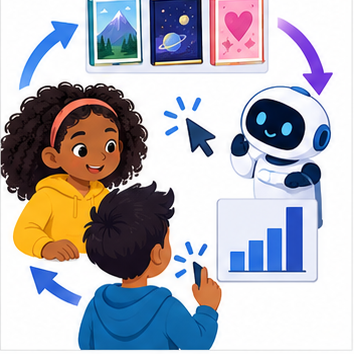
THINKER MISSION
Map how repeated clicks can narrow future suggestions.
Thinker name and date:
Readiness for the connected explanation
An option violates a hard duration limit but has the best score. Should it win?
This week’s end goal
By the end, I can explain how recommendation exposure can create a feedback loop.
Student lesson · 2 of 17
Notice the evidence
PICTURE STORY
Notice → Predict → Explain
Begin with visible evidence. Do not explain more than the picture and information support.
MYSTERY
The learners must use feedback loops to solve a problem. What information do they have? What decision or calculation do they make? What would count as evidence that it worked?
Three observations (what you can point to):
My prediction and the clue supporting it:
A closer explanation
Build a fictional activity recommender using last week's score. Require duration at most a supplied limit. On a tie choose the alphabetically first name. This makes the outcome reproducible rather than dependent on input order. Assume unique names and validated numeric fields.
Student lesson · 3 of 17
See how it works
VISUAL MECHANISM
Input → Process → Output
Trace the information. At each stage, ask what changed and how you could test it.
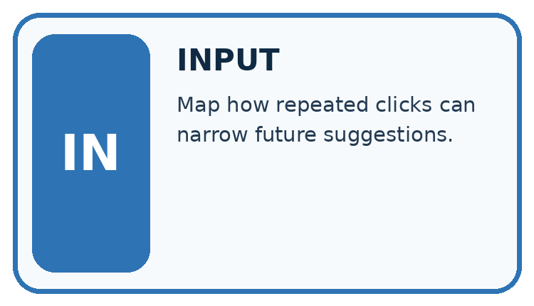
↓
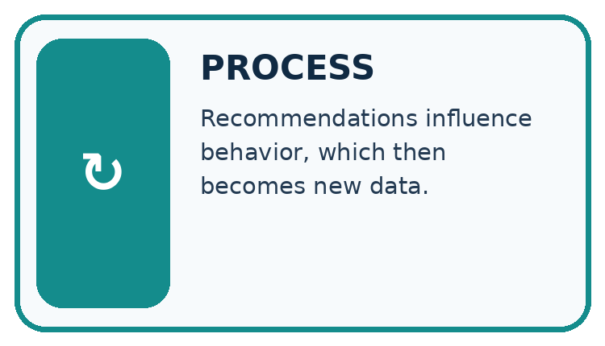
↓
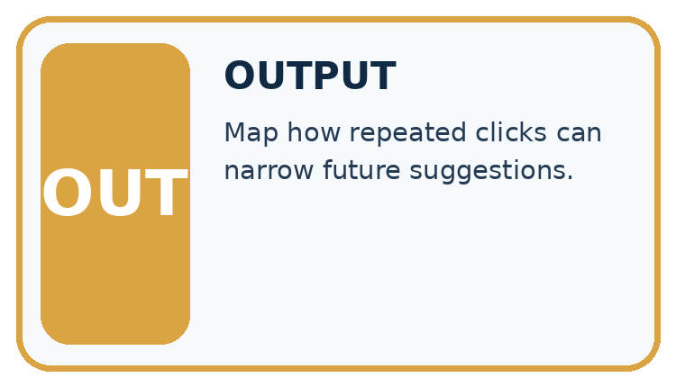
Which stage could fail even when the other two are correct? Explain:
A closer explanation
def recommend(items, limit):
best = None
best_score = None
for item in items:
if item["minutes"] <= limit:
score = 2 * item["fun"] + item["learning"]
if (best is None or score > best_score
or (score == best_score and item["name"] < best)):
best = item["name"]
best_score = score
return best
items = [{"name": "B", "fun": 3, "learning": 2, "minutes": 10},
{"name": "A", "fun": 2, "learning": 4, "minutes": 9}]
print(recommend(items, 10))Follow the evidence
The function prints nothing; the caller prints A. best starts as None to mean no eligible option found. Python short-circuits or: when best is None, later comparisons in that condition need not run. After selecting an item, best_score is numeric. An empty list or no eligible item returns None.
Trace the best-so-far record
Write a trace table with item, eligible, score and best-so-far. In the worked list, B qualifies and scores 8, so B becomes the current best. A also qualifies and scores 8. The scores tie, so the written alphabetical rule changes the best to A. Starting with A gives the same final answer. If no item qualifies, best stays None; do not invent a winner or quietly relax the limit.
Connect the picture and the explanation
Point to the input, the deciding step and the result in this week’s visual. Explain the same step in ordinary words. A picture helps when you can say what each part represents.
Student lesson · 4 of 17
Compare the cases
CASE GALLERY
Four Tests, Four Kinds of Evidence
A system is not understood until it survives more than one comfortable example.


NORMAL CASE: predict and name evidence. BOUNDARY CASE: predict and name evidence.


MISSING INFORMATION: predict and name evidence. TRANSFER CASE: predict and name evidence.
Which case is most likely to reveal a hidden assumption? Why?
Change one thing in the pictured case
Change: On a planned trial, show B once and record no click.
Prediction: B gains one exposure but still zero clicks.
Reason: The observation now supports a nonclick on that display, not a permanent dislike.
Student lesson · 5 of 17
Words that unlock the idea
VOCABULARY LAB
Words You Can Use to Reason
A definition matters when you can recognize the idea, use it, and contrast it with a near-miss.
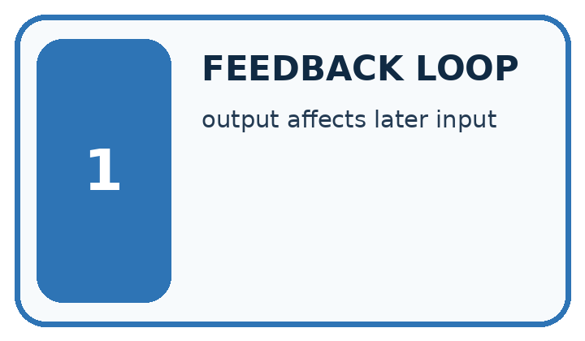
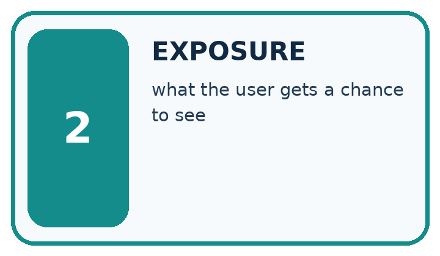
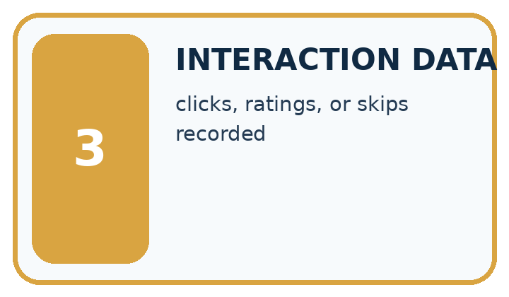
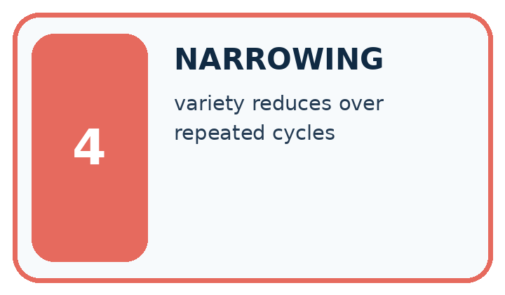
| Word | My own example | Not this / boundary |
|---|---|---|
| feedback loop | A cycle in which outputs affect later inputs and therefore future outputs. | |
| exposure | The opportunity to see or encounter an item, which can affect later choices. | |
| interaction data | Records of what people were shown and how they acted, such as views, clicks or corrections. | |
| narrowing | Reducing the allowed choices, scope or interpretation of a task. |
Words used in the closer explanation
| Word | Meaning |
|---|---|
| Recommender | A procedure that suggests options using a stated policy |
| Tie | Two options have the same comparison score |
| Deterministic | The same inputs and rules produce the same result |
| Explanation | Evidence describing how a result was obtained |
Student lesson · 6 of 17
Follow a worked example
WORKED EVIDENCE
Reason Step by Step
Predict first. Then check each step. A correct answer without visible reasoning is incomplete evidence.
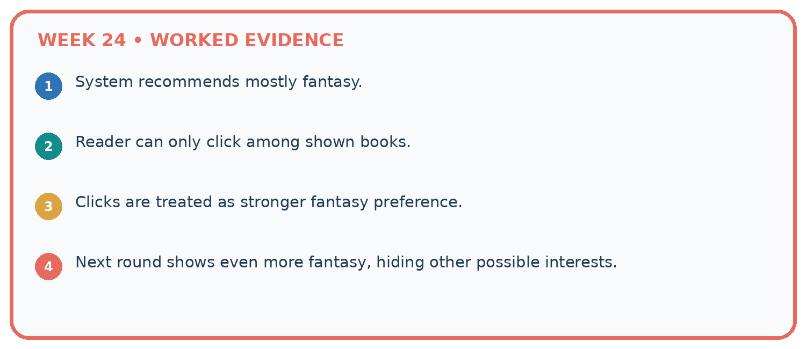
1. System recommends mostly fantasy.
2. Reader can only click among shown books.
3. Clicks are treated as stronger fantasy preference.
4. Next round shows even more fantasy, hiding other possible interests.
Recalculate, retrace, or restate the reasoning in your own representation:
CHECK Did the evidence answer the exact question? Did the total, path, or source record stay consistent?
A closer explanation
Learn from the worked case
Cover the result before checking it. Say what is given, choose the procedure, and follow one step at a time. Then uncover the result and explain your first mismatch. Ask why a step is allowed, not only what number it produces.
A pictorial worked case: Feedback Loops
A fictional catalogue repeatedly recommends two books using observed clicks.
The facts we will use
Initially each click count is 0. Equal counts choose earlier ID A over B.
Only the recommended book is shown. In an invented three-round record, A is shown and clicked each round; B is never shown.


Read the picture one step at a time
Why this result follows
The selection policy changes which evidence is available. A accumulates clicks partly because the system gives it every opportunity, while B has none. These records cannot compare enjoyment of two equally exposed books. Keep display counts separate from click counts; investigate alternatives with a teacher-approved exposure plan rather than treating zero as negative feedback.
What this example does not establish
A click can reflect curiosity or a mistake; even equal exposure does not reveal every reason for selection.
Read the labelled picture: What extra field would reveal why comparing raw clicks is misleading?
Change one thing: On a planned trial, show B once and record no click. Predict the result before checking the explanation. What remains the same?
Student lesson · 7 of 17
Find and repair a mistake
ERROR DETECTIVE
Compare → Diagnose → Repair
Do not patch the answer. Find the earliest unsupported assumption, wrong step, or weak evidence.
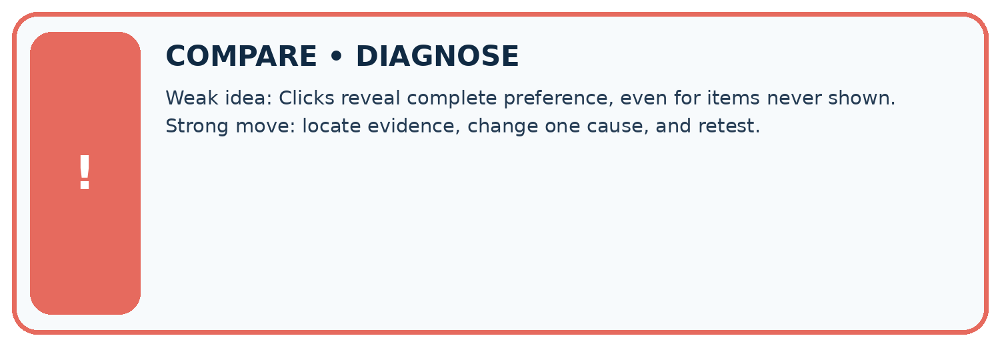
| Evidence record | Expected | Actual | Likely cause / next test |
|---|---|---|---|
| normal case | works | ||
| boundary case | stated rule | ||
| missing input | safe response | ||
| fresh transfer | generalizes |
Repair one cause. Why is this repair better than changing several things?
A closer explanation
The recommendation follows a written scoring policy. It does not learn preferences, prove learning benefit or authorize an action. Display the chosen rule and let a person review whether an option is suitable.
Student lesson · 8 of 17
Practise together
LOGIC STUDIO
Trace Before You Run
Block code, pseudocode, tables, and diagrams are different ways to expose the same reasoning.

SET evidence_record PREDICT expected_result RUN one normal case and one boundary case COMPARE actual_result with expected_result IF different: locate first cause; change one factor; RETEST EXPLAIN result, limitation, and next safe step
Trace one input. Which line changes the state or chooses a path?
A closer explanation
Updating best on score >= best_score makes the last tied item win, so reordering can change results. Use the explicit name comparison for ties. Test both orders and a no-match case after the repair.
Practise with less help: Handle no match
Use workbook W2 for the connected example “Implementing a recommender”. First fill the input and rule boxes. Try the middle steps before asking for a hint. After a hint, try the next step yourself.
| Plan | Do | Check |
|---|---|---|
| What is given? Which rule or procedure applies? | Record each intermediate step. | Does the result follow? What remains unknown? |
Explain your trace to a partner. Your partner points to one step to check. Swap roles on the next case. Each person writes their own explanation.
Check your reasoning
Use the worked case for Implementing a recommender. Proposed explanation: “A successful run proves the conclusion”. Decide whether this explanation is supported. Point to the step or supplied fact that decides; explain your repair if needed.
Answer on your own before discussion. If you are unsure, say which step you need help with.
Explain the picture
What extra field would reveal why comparing raw clicks is misleading?
This is supported practice. Keep the separately named independent case for an attempt before feedback.
Student lesson · 9 of 17
Run the investigation
EVIDENCE LAB
Predict → Test → Record → Explain
Keep expected and actual results separate. Surprises are useful data when recorded honestly.
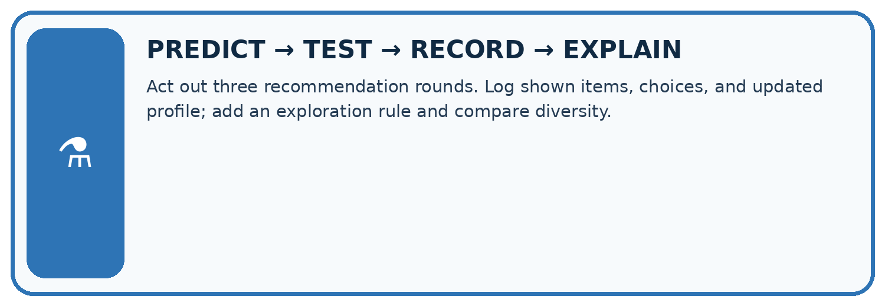
Act out three recommendation rounds. Log shown items, choices, and updated profile; add an exploration rule and compare diversity.
| Test / input | Prediction | Actual | Evidence / calculation | Change or keep? |
|---|---|---|---|---|
| normal | ||||
| boundary | ||||
| missing | ||||
| fresh transfer |
What did the hardest test teach you that the normal test did not?
Plan → try → check
Before trying: what do I expect, and why? While trying: which step could first go wrong? Afterwards: what did I actually observe, and what should change? Keep “not run” if you only traced the procedure.
Student lesson · 10 of 17
Build your understanding
MASTERY
From Knowing the Word to Owning the Idea
Move upward only when you can produce evidence without copying the worked example.

1 • NAME: Define the concept without repeating the textbook.
2 • TRACE: Show the information, state, branch, calculation, or evidence path.
3 • APPLY: Solve a different example independently.
4 • CHALLENGE: Find a boundary case, counterexample, or unfair outcome.
5 • EXPLAIN LIMITS: Say when the result should not be trusted or used alone.
My strongest evidence of independent understanding:
Student lesson · 11 of 17
Connect your project
CUMULATIVE PROJECT
Transparent Book Recommender
Every week adds one inspectable piece. The system must show how it reached a result.
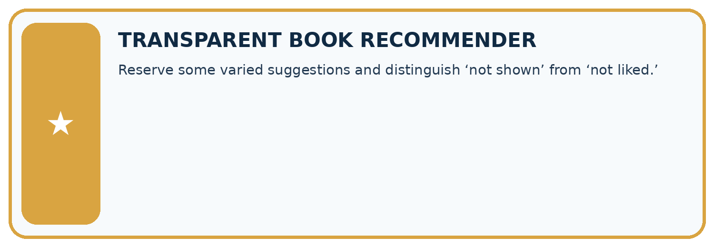
THIS WEEK’S CHECKPOINT Reserve some varied suggestions and distinguish ‘not shown’ from ‘not liked.’
SYSTEM MAP Reader need → allowed inputs → transparent rule or score → ranked candidates → explanation → test record → human decision
What will you add, change, or verify in the project this week?
What should remain under human control?
RESPONSIBLE DESIGN Collect only necessary information. Show uncertainty and limits. Never confuse a ranking with a fact about a person.
Evidence for your project
Log recommender exposure, choice and explicit feedback separately; consider whether its own policy narrows future evidence.
Student lesson · 12 of 17
Show what you know
INDEPENDENT MASTERY PROOF
Explain • Transfer • Test • Defend
Complete this page without copying the worked example. Your reasoning matters more than decoration.
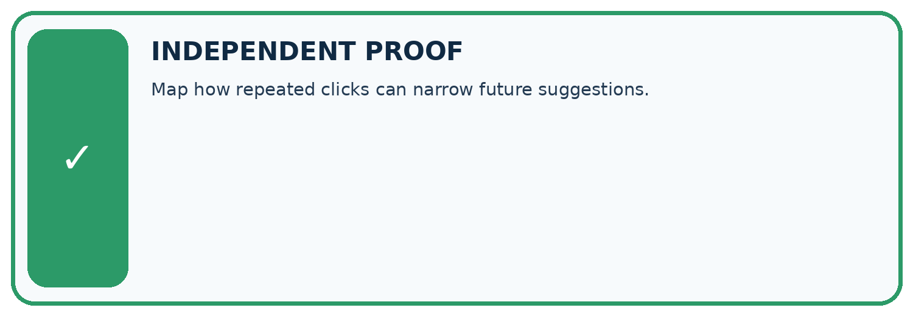
CHALLENGE Map how repeated clicks can narrow future suggestions.
1. My fresh example, trace, calculation, or design:
2. My evidence that it works (include a boundary or missing-data case):
3. One limitation, fairness concern, or situation needing human review:
SELF-CHECK □ I explained the mechanism □ I used evidence □ I tested a fresh case □ I named a limitation □ I can answer ‘why?’
Student lesson · 13 of 17
Study a complete case
Week 24 Worked case
Use the supplied details to practise the weekly concept before attempting the independent question. This case extends the illustrated lesson.
The situation
A recommender shows only adventure books, uses clicks to learn and then shows more adventure.
The question
Explain the feedback loop.
Worked explanation
Exposure affects clicks; clicks affect future exposure. Record what was shown and offer controlled variety.
Explain it in your own words
Which detail supports the answer, and why does it matter?
Trace the supplied case visually
Exposure affects the feedback you collect
| Evidence or stage | Value or result |
|---|---|
| Show adventure | Limits visible choices |
| Observe clicks | Only among shown items |
| Update preferences | Uses those clicks |
| Show more adventure | Repeats the exposure pattern |
A recommender shows only adventure books, uses clicks to learn and then shows more adventure.
Explain the feedback loop.
Exposure affects clicks; clicks affect future exposure. Record what was shown and offer controlled variety.
Student lesson · 14 of 17
Try a new case independently
Independent case: Implement independently
Use the function with X (fun 4, learning 1, minutes 12), Y (3,3,10), Z (5,5,13), limit 12. Predict the winner, reverse the list and retest. Also test limit 9.
Attempt this case before feedback. Record any help. Earlier examples below are further practice; a case already practised with feedback cannot establish fresh transfer.
Week 24 Independent application
Close the worked explanation. Apply the idea to this different question without copying.
Only space books are shown, so nearly every click is on space. Can these clicks prove readers dislike other topics? Explain the loop.
My answer, with a trace, calculation or supporting evidence
Create and test
Change one relevant detail. Predict the result before testing. Include a boundary or missing-information case when it helps reveal a limit.
My changed input and expected result
Connect to your project
Reserve some varied suggestions and distinguish ‘not shown’ from ‘not liked.’
The evidence I will keep
Your teacher has the independent answer and scoring criteria. Complete the matching workbook week to keep your practice evidence together.
Transfer practice from the original programme
A recommender shows poetry in 2 slots and adventure in 20. Poetry gets 1 click; adventure gets 6. Compute clicks per shown slot and explain why neither rate alone proves preference.
Use feedback to improve
Attempt the independent case before hints. Record whether you worked alone, used a hint or followed a model. After feedback, fix the first unsupported step and explain why it changed. A later check uses a changed case, not a copied answer.
Student lesson · 15 of 17
Your lesson route
Start with this question: A fictional catalogue repeatedly recommends two books using observed clicks.
| By the end, I can | How I will show it |
|---|---|
| Implement a deterministic recommender | Explain the deciding step, show a trace or test, and state one limit. |
| Handle ties and no eligible options | Explain the deciding step, show a trace or test, and state one limit. |
| Explain recommendations with their limits | Explain the deciding step, show a trace or test, and state one limit. |
Remember → watch and explain → try with help → investigate → try independently → keep project evidence. Your teacher may spread this lesson across several classes.
Keep your first prediction. Compare it with what the evidence shows and explain any change.
Student lesson · 16 of 17
Finish and return
Close your notes. Explain this goal in your own words: Implement a deterministic recommender
If you are unsure, return to the worked picture and explain one arrow. If you are ready, change an input or assumption and justify your prediction.
Save your workbook evidence. At the next review, try a different case before opening your old answer.
Student lesson · 17 of 17
Supported practice, repair and portfolio
Use this supported practice once, in the browser or on paper. Keep the reserved independent assessment for a separate first attempt before teacher feedback.
A fictional catalogue repeatedly recommends two books using observed clicks.
Practice 1: explain the deciding evidence
Which labelled step matches this detail? B’s zero may mean no exposure, not dislike.
1. Record event
2. Repeat selection
3. Initial tie
4. Interpret carefully
Hint if needed: Read the steps in the pictorial case. Match the supplied detail to the stage that performs or records it.
After your attempt, compare with the supported explanation: Interpret carefully B’s zero may mean no exposure, not dislike. The selection policy changes which evidence is available. A accumulates clicks partly because the system gives it every opportunity, while B has none. These records cannot compare enjoyment of two equally exposed books. Keep display counts separate from click counts; investigate alternatives with a teacher-approved exposure plan rather than treating zero as negative feedback.
Practice 2: explain the deciding evidence
Changed-case practice: On a planned trial, show B once and record no click. Which conclusion is supported by the supplied facts?
1. B gains one exposure but still zero clicks.
2. This one example guarantees correct results for every future input.
3. We can decide the result without examining the changed input or the procedure.
Hint if needed: Use the changed condition and the deciding step in the pictorial trace. The answer must say what follows from those facts.
After your attempt, compare with the supported explanation: B gains one exposure but still zero clicks. The observation now supports a nonclick on that display, not a permanent dislike.
Repair a missing building block
Review Recommendation Scores (ai-2/23). Goal: Compute a weighted score. Short practice: Why does B not become the winner when its score is largest?. Return to this week and explain what you changed.
Review Similarity by Selected Traits (ai-2/21). Goal: Represent items with numeric features. Short practice: Explain why B ceases to be a closest option without any candidate data changing.. Return to this week and explain what you changed.
Review Missing Data (ai-2/18). Goal: Detect absent and unusable values. Short practice: Why is the Boolean True rejected even though arithmetic can treat it like 1 in Python?. Return to this week and explain what you changed.
Predict, run and debug
The browser lab lets you edit the supported Python examples already included in this lesson. Predict first, run, inspect the actual output or error, change one input, then run again. Keep code, predictions, actual results and a reasoned revision together. On paper, label your result as a trace rather than an execution.
Keep your completed work
Use Download completed work in the hosted lesson to export your answers, reflections, practice feedback and code-run evidence. Open the HTML copy to read or print it. Drafts stay in this browser when storage is available; clear drafts on a shared device.